社会网络方法论: 理解网络
Political Research with Big Data (80700673)
胡悦
清华大学
概要
理解网络 (本节课)
- 网络方法论
- 网络要素
- 自我中心网络
分析网络 (下节课)
- 邻居分析
- 扩散分析
- 全网分析
社会网络·方法论
先说点别的：方法论 vs. 方法
你学过什么方法论？
你学过什么方法？
假定
数据
过程
检验
视角
理论
现实
方法
“定性” vs. “定量”
Please don’t let me start…
Before everything
Although the method you’ll learned is a little complicated, you’ll get there.
But probably not today…
Kick-in software
Good starting book
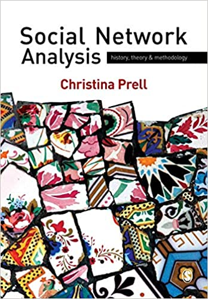
方法论的迁越
For the last thirty years, empirical social research has been dominated by the sample survey. But as usually practiced,…, the survey is a sociological meat grinder, tearing the individual from his social context and guaranteeing that nobody in the study interacts with anyone else in it. — Allen Barton (1968)
Interdependence → Relationships → Structure
跃迁带来的改变：认知
建构理论
理解社会关系：
- 相似性(Similarity)
- 关联性(Social relations)
- 互动性(Interactions)
- 流动性(Flows)
探索现实
分析关系体量：
- 距离(Distance)
- 通道(Degree)
- 聚类(Moduarity)
- 预测(Relation prediction)
跃迁带来的改变：操作
X
- 关系 → 行为
- 位置 → 推广
- 距离 → 效率
Y
- 同质性 → 关联的紧密程度
- 特质性 → 谁是核心
- 组织结构 → 系统密度
网络要素
网络组成要素

Node/Actor/Vertex
Edge/Relation/Link/Tie
Subgraphs: Dyads, triads, k-ads, isolate/island
Walks/Paths
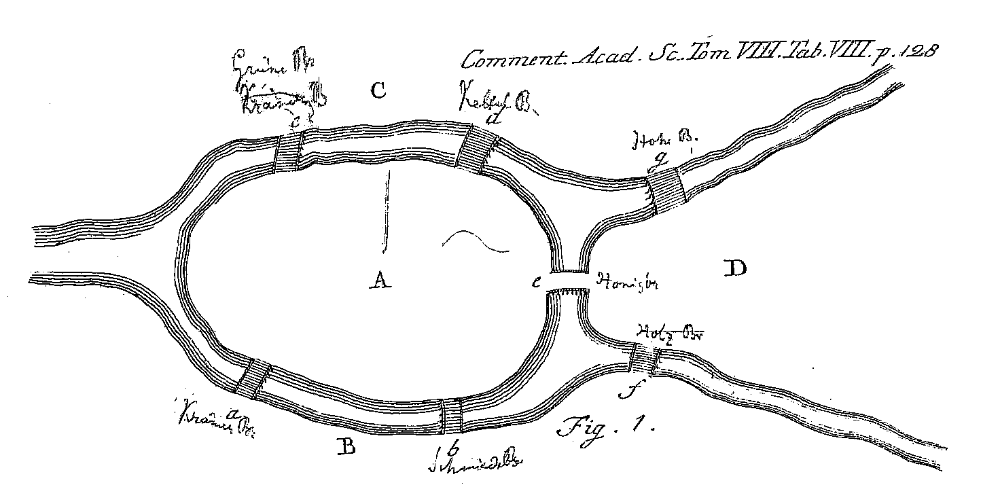
Seven Bridges of Königsberg
网络分型
- “全网”数据 (Complete network)
- 二模网络(Two-mode/bipartite)
- 样本网数据 (“Sample” network)
- 自我核心网络(Ego-net)
- 滚雪球网络(Respondent-drive sampled data)
- Somewhere in between
- 随机网络 (Random graph)
- 代表性？
- The large, the better?
全网数据

样本网数据

随机网络
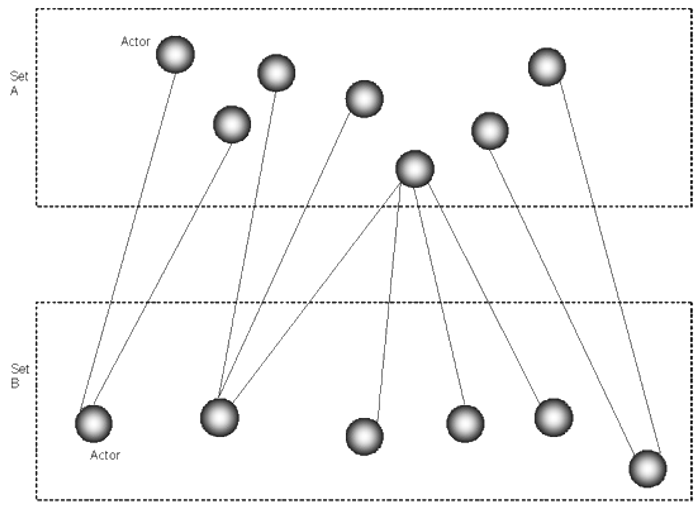
随机网络

抽样网络
记录网络
- 有向（directed）vs. 无向（Undirected）
- 有无（binary）vs. 多少（valued）
- 单线（single）vs. 多线（multiplex）
- DGP是否会产生影响？
- Missing Data
属性
- Nodal attribute data
- Edge weights
网络数据
Incidence to Adjacency
Adjacency to Edge List

自我中心网络
数据生成
- 全网抽样
- Name generators
数据类型
- Ego-alter connections
- 方向、强度
- 关联频率
- Alter-alter connections
- 他他关联否？
- 强度、频率？
- Alter characteristics
网络描述
规模
- 量级（Size）
- 密度（Density）
相似性
- 同质性（Homophily）
(未)连结性
- 结构洞（Structural Holes）
- 掮客（Brokerage）
聚合性
- 向心性（Centrality）
- 小团体（Subgroups）
量级
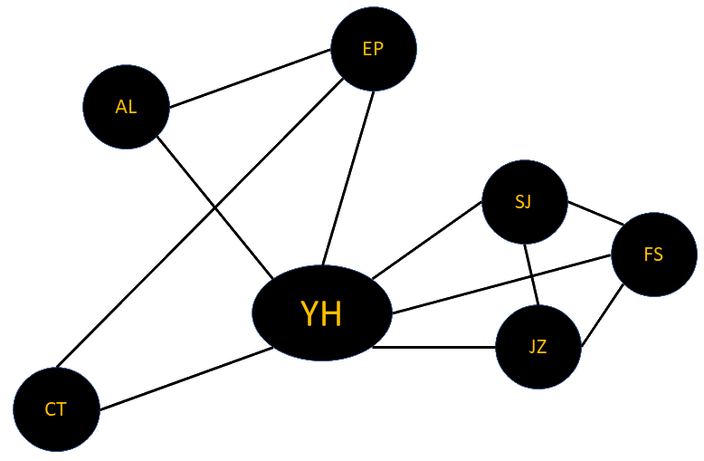
Size = Count(Alters).
nHY = 6.
密度
密度公式： \(d_i = \frac{L_{-i}}{n(n-1)/2}\)
L-i: 与Alters的连结数; ni: 量级（#Alters）
dYH = 6/[6(6 - 1)/2] = 0.4.
应用
Security Egonets (Maoz 2010)
- 数据源：新独立国家独立五年内和已独立国家发生MID五年内的国际环境。
- 测量： Strategic Reference Group (SRG)，以国家为Ego，测量与其产生敌对关系、冲突的国家及国家联盟
- 观点：国家的SRG越大，其越有可能在外交政策中施用争端性政策工具（如介入MID或战争）
Weak Ties (Roch et al. 2000)
- 研究问题: SNA对纳税人税收政策态度影响
- 机制：
- 动机和能力 → weak ties （同事、熟人等） → 比从strong ties获取更多对税务的知识 → 与strong ties 一起决定对照章纳税的态度
行为体间异同: 同/异质性
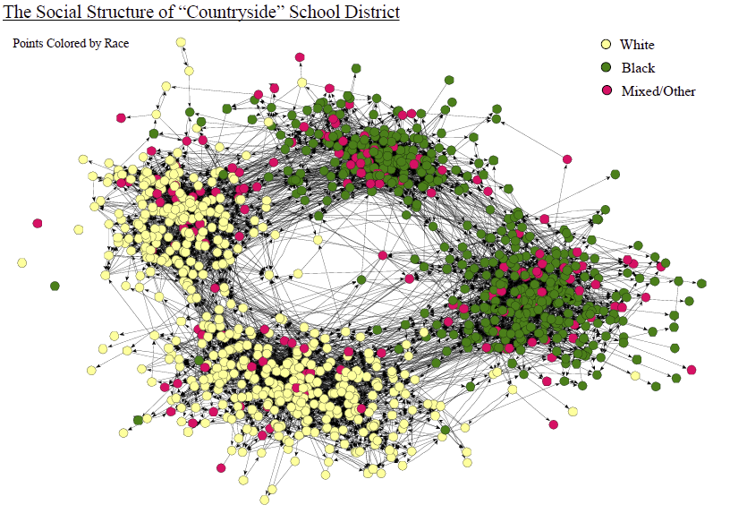
同质性
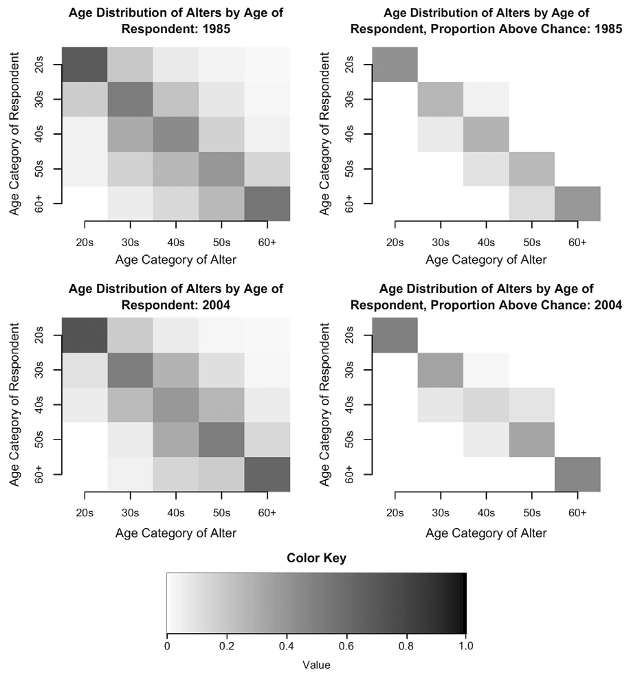
为何关注同质性?
Similarity breeds connection.
什么创造了同质性？
- 人口学因素
- 状态
- 价值
- 行为
衡量同质性
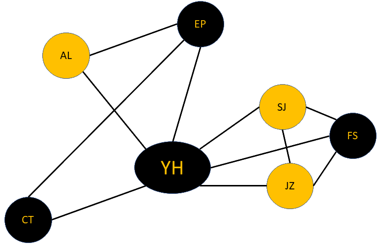
| Same | Different | |
|---|---|---|
| Tie | (a) 5 | (b) 6 |
| No tie | (c) 4 | (d) 6 |
Homophily:
Yule’s Q = (ad - bc)/(ad + bc)
EI = (b - a)/(b + a)
Heterogeneity:
Blau’s H: H = 1 - ∑pi2, p: i所属类连结比例
Index of Qualitative Variation (IQV): H/(1-1/r), r: 总共类别
应用
某甲有九亲、四友、十二同僚，其路何野？
Alters = 9 + 4 + 12 = 25
p亲 = 9/25;
p友 = 4/25;
p僚 = 12/25;
H = 1 - [(4/25)2 + (12/25)2 + (9/25)2] = 0.6144
IQV = 0.6144/(1 - 1/3) = 0.9216
思考:
- 同质就是关联吗？关联能代表同质吗？
- 同质性关联的时间维度 （Wellman, Wong, Tindall, and Nazer(1996)）
网络描述
规模
- 量级（Size）✓
- 密度（Density）✓
相似性
- 同质性（Homophily）✓
(未)连结性
- 结构洞（Structural Holes）
- 掮客（Brokerage）
聚合性
- 向心性（Centrality）
- 小团体（Subgroups）
结构洞 (Structural Holes)
掮客 (Brokerage)
Coordinator, consultant, representative, gatekeeper, liaison
Chinese Migrants in Central-Eastern Europe
↓
Bonding/bridging social network
↓
Political incorporation
Survey-based non-random-network analysis
聚合性
- 小团体：局部聚合性
- 向心性：总体聚合性
- Klein et al. 2004: “Who are people turning to” → in-degree centrality
- Fowler 2006: “Relative importance” → closeness, betweenness
- Rossman et al. 2010: “Reputation” → alpha centrality
- Box-Steffensmeier et al. 2013: “Well-connected and powerful” → eigenvector centrality
中心性测量1
Degree*^
K-step reach*^
Eigenvector*^
Alpha/Katz*^
Power*^
Beta*^
PageRank*^
Hubs and Authorities*^
Closeness*^
Betweenness*
Flow Betweenness*
Random Walk Betweenness*
……
常见测量与应用
CD(i) = ∑nj = 1nji, j ≠ i
关注点：local network, ego connect
目标：Activity，与别人的连接度
Eigenvector: AX = λX, det(A - λI) = 0
CE(i) = k-1∑nj = 1AjiCE(j)
关注点：近邻关系 （可以看作degree centrality 改进版)
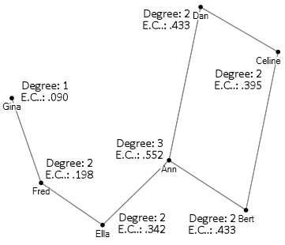
CB(i) = ∑j,kδjik/δjk, i≠j≠k.
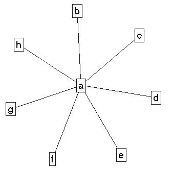
目标：Potential controls
CC(i) = ∑nj = 1dij, j ≠ i1
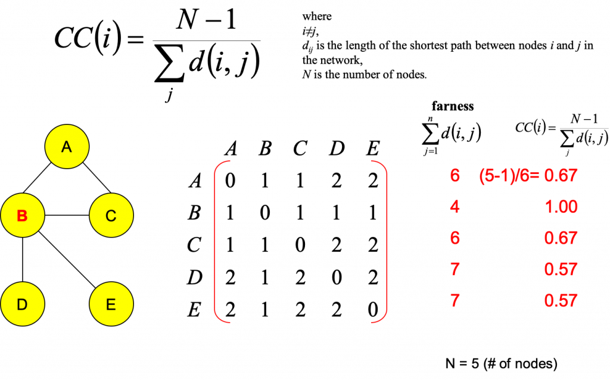
目标：Independence, 与每个结点的关系
如何挑选
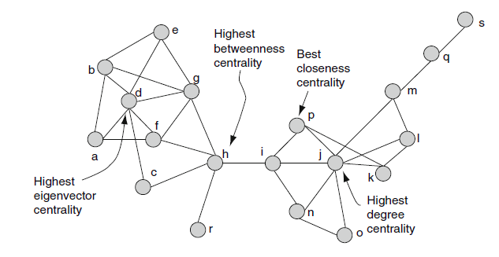
Take-Home Points
社会网络方法论
- 意义：革命性
- 理论：关系学
- 现实：关联方向、烈度
- 方法：超越计量
网络要素
- 宏观
- 全网
- 样本网络
- 微观
- 节点
- 连结
- 方向
Ego-net
- 生成
- Ego
- Path
- Boundary
- Snowball
- 描述
- Size
- Density
- Similarity
- Centrality